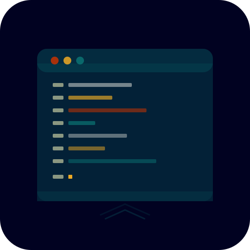
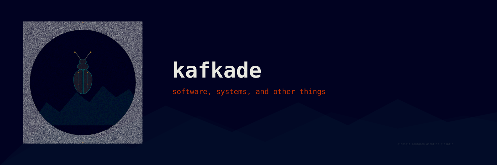
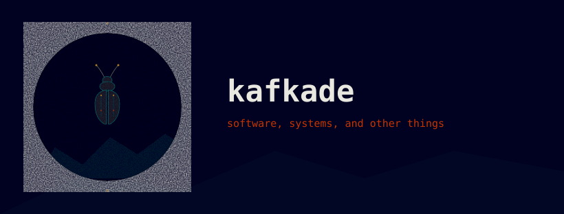
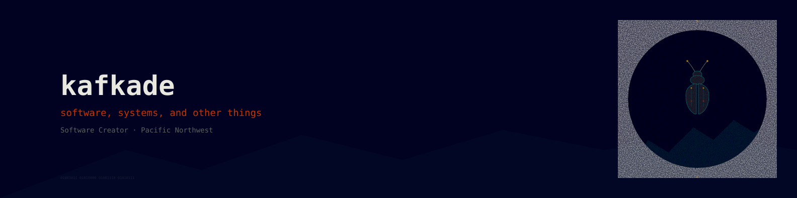
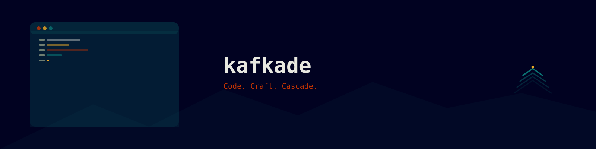
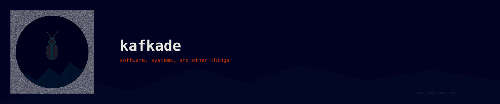
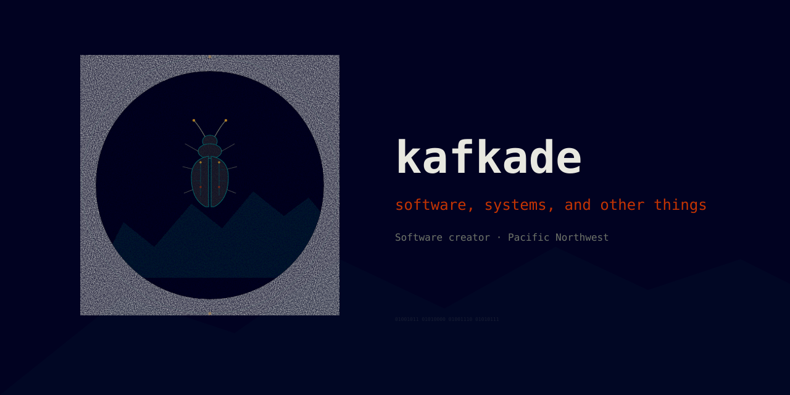

Beetle circuit medallion motif. All assets ready to export. Open each SVG in a browser and screenshot, or use Figma / Inkscape / svgtopng.com to convert.

Square (full)
Circle crop preview
(X, GitHub, Patreon, BMC)
80px (small avatar)
40px (tiny)






| Platform | Profile Pic | Banner | File |
|---|---|---|---|
| X (Twitter) | 400×400 (circle) | 1500×500 | avatar-512.svg + banner-x-bluesky-1500x500.svg |
| Bluesky | 400×400 (circle) | 1500×500 | avatar-512.svg + banner-x-bluesky-1500x500.svg |
| 170×170 (circle) | 820×312 | avatar-512.svg + banner-facebook-820x312.svg | |
| 400×400 (circle) | 1584×396 | avatar-512.svg + banner-linkedin-1584x396.svg | |
| 320×320 (circle) | N/A | avatar-512.svg | |
| GitHub | 400×400 (circle) | 1280×640 | avatar-512.svg + banner-github-1280x640.svg |
| Patreon | 512×512 (circle) | 1600×400 | avatar-512.svg + banner-patreon-1600x400.svg |
| Buy Me a Coffee | 300×300 (circle) | 1920×400 | avatar-512.svg + banner-bmc-1920x400.svg |